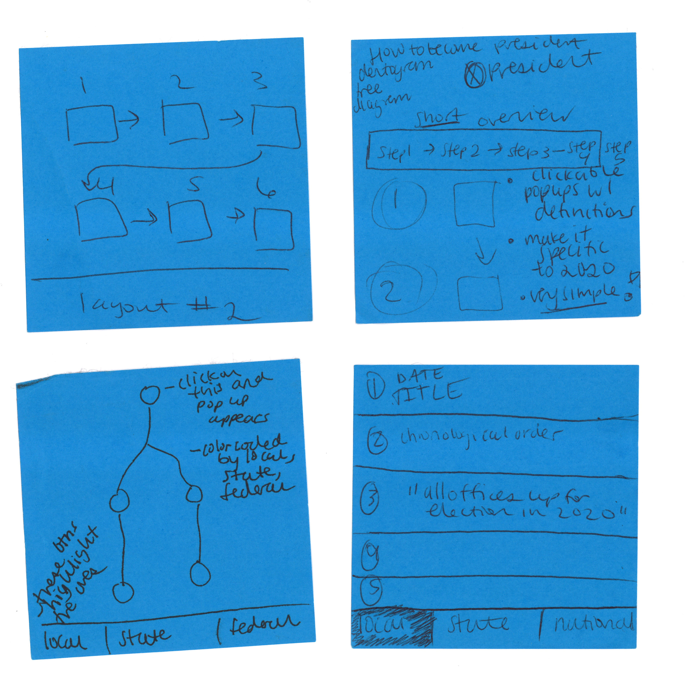
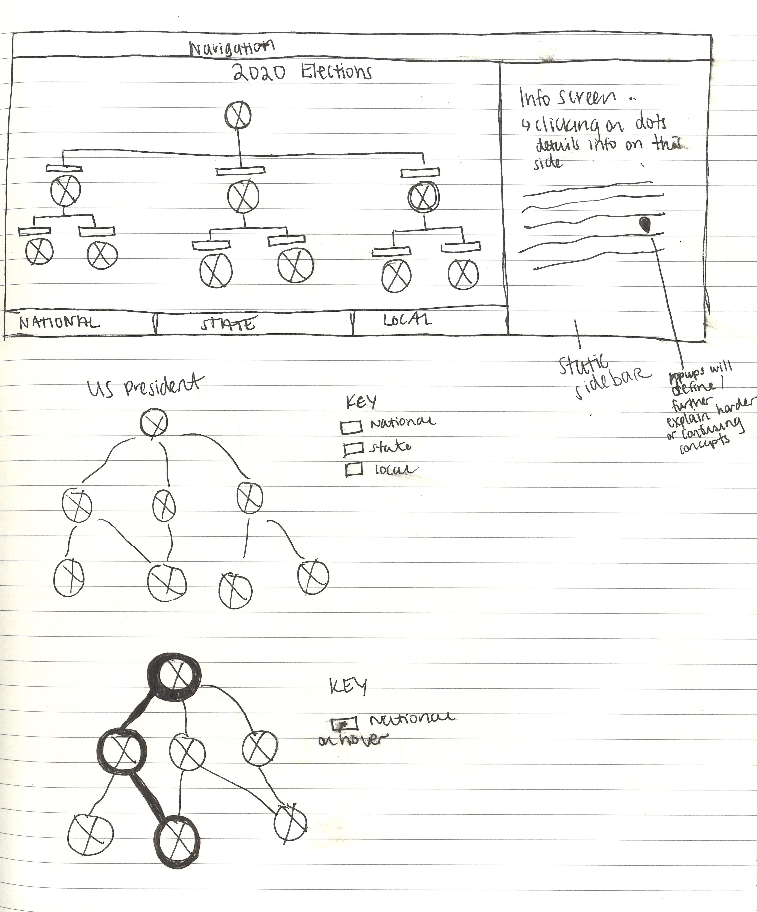
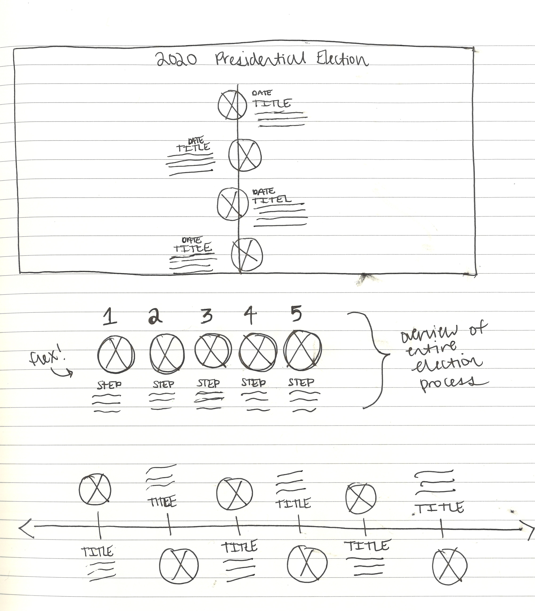
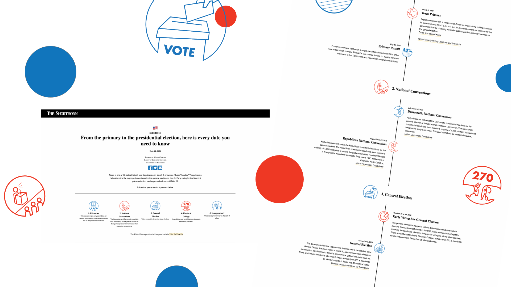

Visualizing the Presidential Election of 2020
Live Site
01 Brief
In 2020, thousands of college students will cast their first election vote. As the web developer for The Shorthorn, a student run news organization, I saw this as an opportunity to help demystify the election process for college students using visuals.
The target audience is college students ages 18-24, focused on first time voters.
My Role
- Visual Design & Layout
- Front-End Development
Credits
- Managing Editor.....Reese Oxner
- Design Editor.....Shay Cohen
- Illustrator.....Ken Torne
Timeframe
- 2 weeks
02 Sketching & Iterations
The Tree Diagram
My first ideas focused on using a tree diagram. The idea was to map all the elections pertinent to a UTA student, divided into national, state, and local elections. The problem was that the relationship between these elections was unclear. Instead, I decided to specifically focus on the presidential election dates.
The Dendogram
The second idea was to use a dendrogram to illustrate the nation's path to elect a new president. I wanted to map every step from the primaries to the general election to inaguration. Ultimately, the dendrogram was cast aside in favor of a more mobile friendly option. However, illustrating the path to the presidency became the driving idea moving forward.
The Timeline (Final Design)
Through several iterations, I settled on a basic timeline to map all the key dates from the March Primary to the 2021 January inauguration.
I used 5 icons to visually represent the 5 different stages in the presidential selection process. These icons act as markers for each section of the process, as the user scrolls down the timeline.

03 Results

Reflection
What did I learn?
Having an idea is great. But effectively communicating this idea is an important skill for designers and developers.
Final Thoughts
The idea for this project was rooted in my desire to encourage the young people around me to vote. I want to start conversations with my work, and I was fortunate enough to have a team that supported this vision. In the end, I'm proud of the fruits of our collaboration.